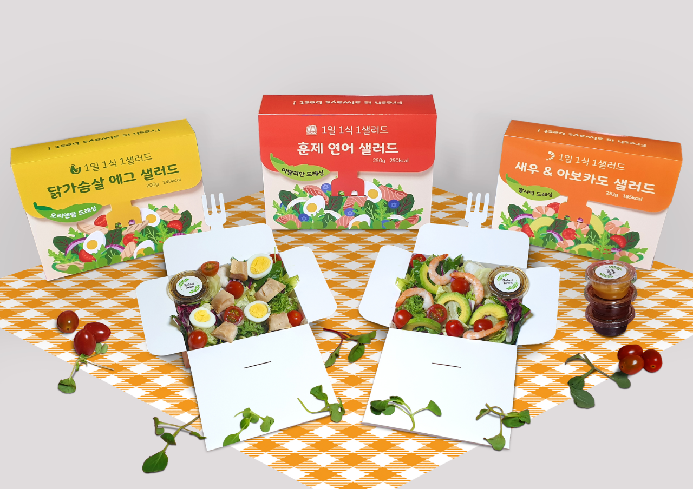
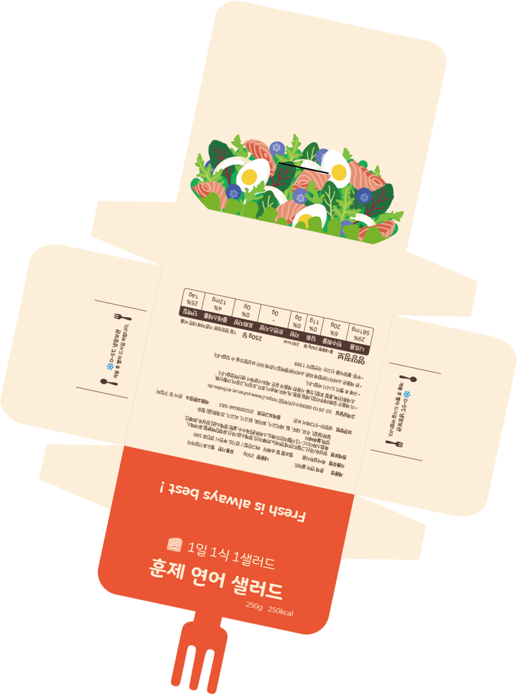
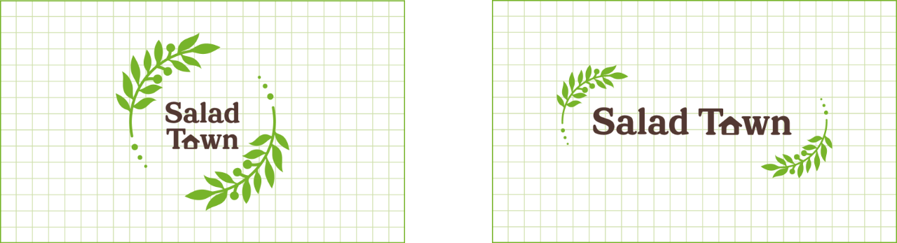

IDENTITY
MOTION GRAPHIC
ADVERTISING
PACKAGING
Package Design
샐러드 패키지 - Salad Town

About
작업기간
2021년 3월 ~ 2021년 6월
사용 프로그램
Illustrator
Overview
주로 곁가지 메뉴로 인식되던 샐러드가 주식으로 떠오르면서 신선 편의 식품 생산 규모가
눈에 띄에 늘어났습니다. 코로나 19가 길어지자 건강에 관심이 많아진 사람들을 위해
만들어진 들고다니면 먹을 수 있게 제작한 샐러드 패키지입니다.

Design Concept
지기구조와 일러스트와의 조화에 집중하여 뚜껑을 닫았을 때,
포크로 샐러드를 찍어 먹는 듯한 모습이 연상되도록 디자인하였습니다.
혹시 모를 샐러드 오염을 방지하기 위해 소스의 종류를 스티커로 제작하여
뚜껑이 한 번 더 눌러지도록 디자인해주었습니다.

Logo Concept
Town의 의미에 맞게 아이콘을 결합해 디자인하였으며 로고 테두리에
나무 줄기를 추가하여 자연의 느낌을 연출하였습니다.
Main Color